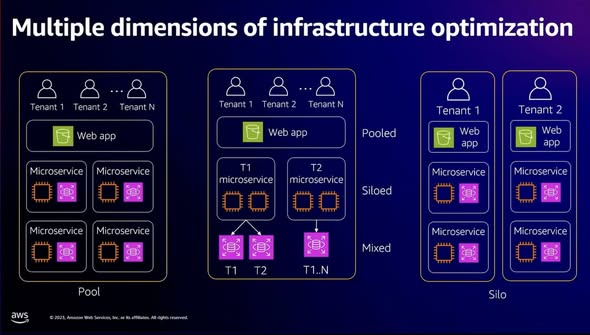
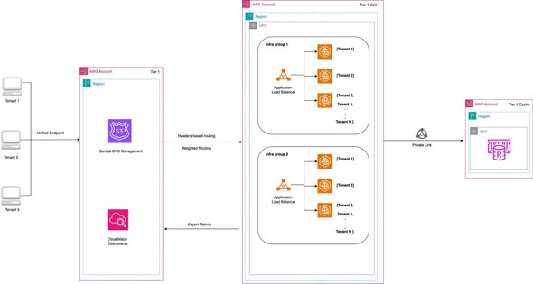

Xin chào các anh chị, em vừa đọc một bài khá hay trên AWS Blog về cách xây dựng Hybrid Multi-Tenant Architecture cho các stateful services trên AWS. Đây là một bài toán rất thực tế đối với các hệ thống SaaS hoặc nền tảng phục vụ nhiều khách hàng cùng lúc, nhưng vẫn cần đảm bảo hiệu năng, cô lập tài nguyên và tối ưu chi phí vận hành.
Trong bài blog, hệ thống được nhắc đến là một nền tảng ad-serving (máy chủ quảng cáo) quy mô lớn, xử lý hàng triệu request mỗi giây. Trước đây, kiến trúc sử dụng mô hình cellular architecture, tức là mỗi tenant hoặc khách hàng lớn sẽ có một AWS account riêng, VPC riêng, Application Load Balancer riêng và ECS riêng. Cách này giúp cô lập tốt, nhưng lại tạo ra nhiều vấn đề khi hệ thống mở rộng.
Các vấn đề chính gồm:
Điểm khó nằm ở chỗ đây không phải hệ thống stateless thông thường. Ứng dụng cần load và giữ dữ liệu trong bộ nhớ cho từng tenant để phục vụ request nhanh hơn, thay vì truy vấn database liên tục mỗi lần có request. Vì vậy, nếu chia sẻ compute không hợp lý, bộ nhớ của tenant này có thể làm ảnh hưởng đến tenant khác.

AWS đưa ra mô hình hybrid multi-tenant architecture, kết hợp giữa chia sẻ hạ tầng và cô lập tài nguyên ở cấp cluster. Thay vì tạo một AWS account riêng cho từng tenant, kiến trúc này tổ chức hệ thống theo 3 lớp:
Trong mỗi infra group, mỗi tenant vẫn có ECS cluster riêng, giúp đảm bảo cô lập compute và memory. Tuy nhiên, các phần dùng chung như VPC endpoint, IAM role hoặc kết nối downstream service được cấu hình sẵn ở cấp tier, giúp giảm đáng kể công sức triển khai.

Điểm đáng chú ý nhất của kiến trúc này là cách AWS giải quyết bài toán cân bằng giữa isolation và operational efficiency. Nếu cô lập quá mạnh, ví dụ mỗi tenant một AWS account, hệ thống sẽ an toàn nhưng vận hành nặng, tốn chi phí và onboarding chậm. Nếu chia sẻ quá nhiều, hệ thống tiết kiệm hơn nhưng dễ gặp lỗi noisy neighbor, đặc biệt với stateful services.
Mô hình hybrid giải quyết bằng cách:
Kết quả trong bài blog cho thấy thời gian onboarding tenant giảm từ 52 ngày xuống còn 7 ngày, tương đương giảm khoảng 86%. Các bước setup hạ tầng và effort kỹ thuật cũng giảm khoảng 80%.
Khi người dùng gửi request vào hệ thống, request sẽ được định tuyến đến đúng môi trường xử lý của từng tenant.
Luồng xử lý:
/tenant-a/* hoặc trong HTTP header.TENANT_ID để xác định tenant đang được phục vụ.Ngoài ra, hệ thống có thể giám sát lỗi theo từng tenant bằng Amazon CloudWatch Logs Insights. Ví dụ, đội vận hành có thể truy vấn số lượng lỗi theo tenant_id để nhanh chóng xác định tenant nào đang gặp sự cố. Đây là điểm quan trọng trong kiến trúc multi-tenant vì nó giúp cô lập vấn đề, giảm ảnh hưởng giữa các tenant và hỗ trợ xử lý sự cố nhanh hơn.
Kiến trúc này mang lại một số lợi ích rõ ràng:
Bài blog này cho thấy một hướng thiết kế rất đáng học khi xây dựng hệ thống SaaS multi-tenant hoặc các nền tảng cần phục vụ nhiều khách hàng lớn trên AWS. Thay vì chọn giữa hai hướng cực đoan là “mỗi tenant một hạ tầng riêng” hoặc “tất cả tenant dùng chung toàn bộ tài nguyên”, AWS đề xuất một mô hình trung gian: chia sẻ những phần có thể chia sẻ, nhưng vẫn cô lập những phần dễ gây ảnh hưởng hiệu năng như compute và memory.
Với các hệ thống stateful services, đặc biệt là hệ thống cần giữ dữ liệu trong memory để xử lý request nhanh, kiến trúc này là một gợi ý rất thực tế. Nó giúp giảm thời gian triển khai tenant mới, tối ưu chi phí vận hành và vẫn giữ được mức độ cô lập cần thiết cho từng khách hàng.
Nguồn tham khảo:
(Đây là 1 bài blog mình đọc được và thấy trên aws blog, đây là những gì mình đã tóm tắt sau khi mình đọc xong có gì sai sót mong mọi người bỏ qua .)